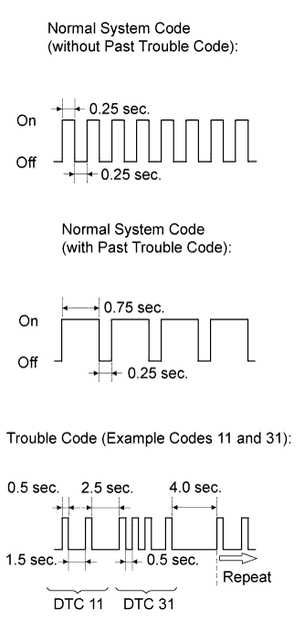

AIRBAG SYSTEM > DTC CHECK / CLEAR |
| CHECK DTC (Using SST Check Wire) |
Check for DTCs (present trouble code).
Turn the engine switch on (IG) and wait for approximately 60 seconds.
Using SST, connect terminals 13 (TC) and 4 (CG) of the DLC3.
Check for DTCs (past trouble code).
Using SST, connect terminals 13 (TC) and 4 (CG) of the DLC3.
Turn the engine switch on (IG) and wait for approximately 60 seconds.
|  |
Read the DTCs.
Read the blinking patterns of the DTCs. As examples, the blinking patterns for the normal system code and trouble codes 11 and 31 are shown in the illustration.
| CLEAR DTC (Using SST Check Wire) |
When the engine switch is turned off, the DTCs are cleared.
Using SST, connect terminals 13 (TC) and 4 (CG) of the DLC3, and then turn the engine switch on (IG).
Disconnect terminal TC of the DLC3 within 3 to 10 seconds after the DTCs are output and check that the SRS warning light comes on after 3 seconds.
Within 2 to 4 seconds after the SRS warning light comes on, connect terminals 13 (TC) and 4 (CG) of the DLC3.
Check that the SRS warning light goes off within 2 to 4 seconds after connecting terminals 13 (TC) and 4 (CG) of the DLC3. Then, disconnect terminal 13 (TC) within 2 to 4 seconds after the SRS warning light goes off.
Check that the SRS warning light comes on again within 2 to 4 seconds after disconnecting terminal 13 (TC). Then, reconnect terminals 13 (TC) and 4 (CG) within 2 to 4 seconds after the SRS warning light comes on.
Check that the SRS warning light goes off within 2 to 4 seconds after connecting terminals 13 (TC) and 4 (CG) of the DLC3. Also check that the normal system code is output within 1 second after the SRS warning light goes off.
If DTCs are not cleared, repeat this procedure until the codes are cleared.
| CHECK DTC (Using the intelligent tester) |
Connect the intelligent tester to the DLC3.
Turn the engine switch on (IG).
Turn the intelligent tester on.
Enter the following menus: Body / SRS Airbag / Trouble Codes.
| CLEAR DTC (Using the intelligent tester) |
Connect the intelligent tester to the DLC3.
Turn the engine switch on (IG).
Turn the intelligent tester on.
Enter the following menus: Body / SRS Airbag / Trouble Codes.
Clear the DTCs.